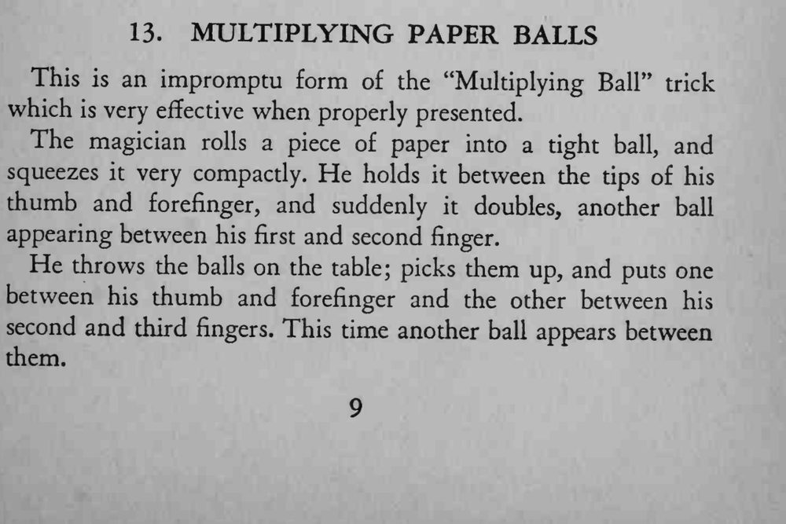
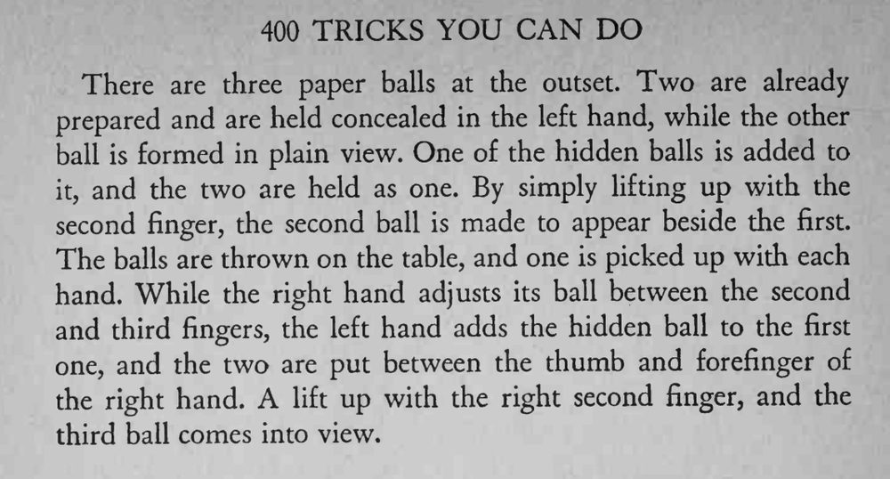

指间一颗紧实的纸球忽然变成了两颗，再一变又成了三颗。
纸球要揉得紧实，指间夹球时才不容易露馅。


This is an impromptu form of the "Multiplying Ball" trick which is very effective when properly presented. The magician rolls a piece of paper into a tight ball, and squeezes it very compactly. He holds it between the tips of his thumb and forefinger, and suddenly it doubles, another ball appearing between his first and second finger. He throws the balls on the table; picks them up, and puts one between his thumb and forefinger and the other between his second and third fingers. This time another ball appears between them. There are three paper balls at the outset. Two are already prepared and are held concealed in the left hand, while the other ball is formed in plain view. One of the hidden balls is added to and the two are held as one. By simply lifting up with the second finger, the second ball is made to appear beside the first. The balls are thrown on the table, and one is picked up with each hand. While the right hand adjusts its ball between the second and third fingers, the left hand adds the hidden ball to the first one, and the two are put between the thumb and forefinger of the right hand. A lift up with the right second finger, and the third ball comes into view.